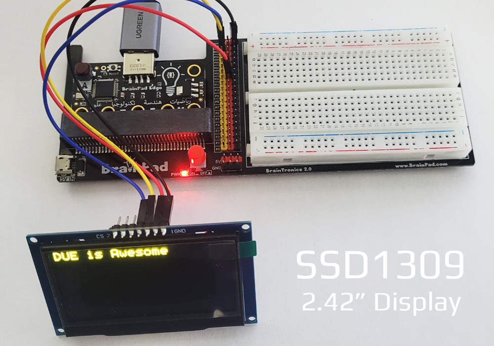

LCD
These functions allow for graphics on multiple display types, including B&W and color display.
B&W Displays
LCD Graphics supports SSD1306 128x64 B&W I2C, which work on all BrainPad boards. This display is found on the BrainPad Pulse by default, and can be added to the I2C channel on all of the other boards. These displays are available in multiple sizes but most common is 0.96". The LcdConfig() function (documented below) can be used to configure the system to work with an externally connected display.

Caution
Displays with knock-off controller SSH1106 that is supposed to be compatible with SSD1306 did not work as expected.
Color Displays

Support for color displays includes ILI9342, ILI9341, and ST7735. These color displays only work on boards with SC13 chipset. The Configuration property (documented below) can be used to configure the system to work with an externally connected display.
Display Configuration
Display.Configuration Property, change display configuration
Type: Screen supported: BuiltIn = 0, ILI9342 = 0x80, ILI9341 = 0x81, ST7735 = 0x82, SSD1306 = 0x3C. If an SSD1306 screen has different i2c slave address 0x3C, set Type to that address directly
SpiChipSelect: Chip select pin, SPI display only
SpiDataControl: Data control pin, SPI display only
SpiPortrait: True: Portrait, False: Landscape, SPI display only
SpiFlipScreenVertical: Flip vertical, SPI display only
SpiFlipScreenHorizontal: Flip horizontal, SPI display only
SpiSwapRedBlueColor: Swap Red and Blue, SPI display only
SpiSwapByteEndianness: Swap byte endianness
WindowStartX: Default is 0. Some screens need adjust this value to work correctly
WindowStartY: Default is 0. Some screens need adjust this value to work correctlyDisplay.Configuration.Update() Apply configuration
This example will set the system to use the color display adapter from Waveshare, which uses ST7735 1.8" display. The display's chip select is on pin 2 and data control is on pin 0. There is also a backlight on pin 6 and reset on pin 1 that need to be controlled manually.

# turn on the back-light (if needed)
duelink.Digital.Write(6, True)
# release reset (if needed)
duelink.Digital.Write(1, True)
# Set config for ST7735 SPI display
duelink.Display.Configuration.Type = duelink.DisplayType.ST7735
duelink.Display.Configuration.SpiChipSelect = 2
duelink.Display.Configuration.SpiDataControl = 0
duelink.Display.Configuration.SpiPortrait = False
duelink.Display.Configuration.SpiFlipScreenVertical = True
duelink.Display.Configuration.SpiFlipScreenHorizontal = False
duelink.Display.Configuration.SpiSwapRedBlueColor = False
duelink.Display.Configuration.SpiSwapByteEndianness = False
duelink.Display.Configuration.WindowStartX = 0
duelink.Display.Configuration.WindowStartY = 0
# Apply configuration
duelink.Display.Configuration.Update()
# Clear the screen
duelink.Display.Clear(0)
color = 0x00FF00
x = 0
y = 0
scaleWidth = 2
scaleHeight = 3
# Draw text
duelink.Display.DrawTextScale("DUE has color", color, x, y, scaleWidth, scaleHeight)
# Draw some lines
for c in range(2,200):
duelink.Display.DrawLine(c, c, 40, c, 60)
duelink.Display.DrawLine((c << 8), 200 - c, 60, 200-c, 80)
duelink.Display.DrawLine((c << 16), c, 80, c, 100)
# Show on screen
duelink.Display.Show()
This example below will direct graphics to an external 2.42" display with address 0x3C, wired to the 2.42" SSD1309 display showing in the image above. Tip: A resistor on the back of the display needs to be moved to change its bus from SPI to I2C.

i2caddress = 0x3C
duelink.Display.Configuration.Type = i2caddress # apply i2c address directly
duelink.Display.Configuration.Update()
duelink.Display.Clear(0)
duelink.Display.DrawText("DUE is Awesome", 1, 0, 0)
duelink.Display.Show()
Graphical Memory
All LCD functions process the graphics commands in an internal memory. It starts with Clear(), which clears up the entire graphics memory to a specific color. When the user is ready, the graphical memory is transferred to the display using Show().
Display.Clear(color) Clears the entire screen to black or white
color: Color valueDisplay.SetPixel(color, x, y)
color: Color value
x: x pixel value
y: y pixel valueDisplay.Show() Sends the display buffer to the LCD.
# Clear the screen
duelink.Display.Clear(0)
# Set pixel color 0xFFFFFF, at x = 64, y = 32
duelink.Display.SetPixel(0xFFFFFF,64,32)
# Show on screen (flush the cache)
duelink.Display.Show()
Color Value
The system supports Color and B&W displays. To keep uniformity, 0 is always black and 1 is always white. Any other value is considered a standard RGB color formatted 0xRRGGBB. For example, GHI Electronics blue is 0x0977aa.
Shapes
Display.DrawLine(color, x1,y1,x2,y2)
color: Color value
x1: Starting x point
y1: Starting y point
x2: Ending x point
y2: Ending y pointDisplay.DrawCircle(color, x,y,radius)
color: Color value
x: x position of circle's center
y: y position of circle's center
radius: radius of the circleDisplay.DrawRectangle(color, x, y, width, height)
color: Color value
x: Starting x point
y: Starting y point
width: Rectangle width
height: Rectangle heightDisplay.DrawFillRect(color, x, y, width, height)
color: Color value
x: Starting x point
y: Starting y point
width: Rectangle width
height: Rectangle height
duelink.Display.Clear(0)
duelink.Display.DrawLine(1, 0, 0, 128, 64)
duelink.Display.DrawCircle(1, 64, 32, 31)
duelink.Display.DrawRectangle(1, 10, 10, 118, 54)
duelink.Display.DrawFillRect(1, 10, 10, 118, 54)
duelink.Display.SetPixel(1, 64, 32)
duelink.Display.Show()
Text
Display.DrawText(text, color, x, y)
text: String message in double quotes.
color: Color value
x: x position
y: x positionDisplay.DrawTextTiny(text, color, x, y) Draw tiny text - Displays tiny 5px text.
text: String message in double quotes.
color: Color value
x: x position
y: x positionDisplay.DrawTextScale(text, color, x, y, scaleWidth, scaleHeight) Works exactly the same as LcdText() but adds scaling.
text: String message in double quotes.
color: Color value
x: x position
y: x position
scaleWidth: Width scale multiplier
scaleHeight: Height scale multiplier
x = 100
duelink.Display.Clear(0)
duelink.Display.DrawText(x, 1, 0, 0)
duelink.Display.DrawTextTiny(x, 1, 0, 10)
duelink.Display.DrawTextScale(x, 1, 0, 20,2,2)
duelink.Display.Show()
Images
There are cases where images need to be added to the screen. Of course, we are taking about basic simple images, more like a tiny sprite in a game.
Display.DrawImage(array, x, y, transform) Array of pixel, must start with 2 elements that contain the image's width and height
array: Image array (see below).
x: x position on screen.
y: y position on screen.
transform: transform modifier.Display.DrawImageScale(array, x, y, scaleWidth, scaleHeight, transform) Works the same as
DrawImage()but adds scaling.
array: Image array (see below).
x: x position on screen.
y: y position on screen.
scaleWidth: Width scale multiplier
scaleHeight: Height scale multiplier
transform: transform modifier. (see above)
The following example displays the image array on the screen. We will place the array on multi line to help us visualize what the image might look like, but placing everything on a single line has the same effect
img = [8, 8, # width: 8 and height: 8
0, 0, 0, 1, 1, 0, 0, 0,
0, 0, 1, 1, 1, 1, 0, 0,
0, 1, 1, 1, 1, 1, 1, 0,
1, 1, 0, 1, 1, 0, 1, 1,
1, 1, 1, 1, 1, 1, 1, 1,
0, 0, 1, 0, 0, 1, 0, 0,
0, 1, 0, 1, 1, 0, 1, 0,
1, 0, 1, 0, 0, 1, 0, 1
]
duelink.Display.Clear(0)
duelink.Display.DrawImage(img, 0, 0, duelink.Display.TransformNone)
duelink.Display.DrawImageScale(img, 64, 0, 4, 4, duelink.Display.TransformRotate90)
duelink.Display.Show()
Transformation modifiers:
| Value | Transformation |
|---|---|
| 0 | No transform |
| 1 | Flip image horizontally |
| 2 | Flip image vertically |
| 3 | Rotate image 90 degrees |
| 4 | Rotate image 180 degrees |
| 5 | Rotate the image 270 degrees(same as -90 degrees) |
ShowBuffer
This function takes raw bitmap image (32 bit), convert to new array with ColorDepth format internally, then send the new array data to device.
- Display.ShowBuffer(rawData, colorDepth) Show 32 bit raw image data on screen
rawData Inout raw data. Must be 32 bit and alpha will be ignored
ColorDepth: This lets the stream know what is the format of the incoming data stream. B&W displays only support 1. Color displays support 4 (palette), 8, and 16 bits.
imageRaw = [0] * (128 * 64 * 4); # Create an image with width = 128, height = 64, 32 bit
colorDepth = 1 # 1bpp
for i in range(len(imageRaw)):
# set all pixels to 0
imageRaw[i] = 0
duelink.Display.ShowBuffer(imageRaw, colorDepth)
for i in range(len(imageRaw)):
# set all pixels to1
imageRaw[i] = 1
duelink.Display.ShowBuffer(imageRaw, colorDepth)
Tip
On 1bpp display, the data is organized as 8bit columns going left to right and then wrapping around to the next row.
Note
ShowBuffer() calls Show() internally.
Palette
The palette is used when 4bpp color depth is used. The palette table is used as a lookup table to set the color for each one of the 16 possibilities. The default colors are below. However, the user can change it to whatever they desire. For example, they can be set to 16 shades of green to show a forest scene that needs different shades of green.
- Palette(index, colorValue) - Sets the desired color for a palette.
index: Index number of color
colorValue: A standard HEX value of the RGB color.
Default colors:
| Index | Color Value | Color |
|---|---|---|
| 0 | 0x000000 | Black |
| 1 | 0xFFFFFF | White |
| 2 | 0xFF0000 | Red |
| 3 | 0x32CD32 | Lime |
| 4 | 0x0000FF | Blue |
| 5 | 0xFFFF00 | Yellow |
| 6 | 0x00FFFF | Cyan |
| 7 | 0xFF00FF | Magenta |
| 8 | 0xC0C0C0 | Silver |
| 9 | 0x808080 | Gray |
| 10 | 0x800000 | Maroon |
| 11 | 0xBAB86C | Olive |
| 12 | 0x00FF00 | Green |
| 13 | 0xA020F0 | Purple |
| 14 | 0x008080 | Teal |
| 15 | 0x000080 | Navy |
Example code to swap Black (index 0) and Red color (index 2)
duelink.Display.Palette(0, 0xFF0000)
duelink.Display.Palette(2, 0x000000)